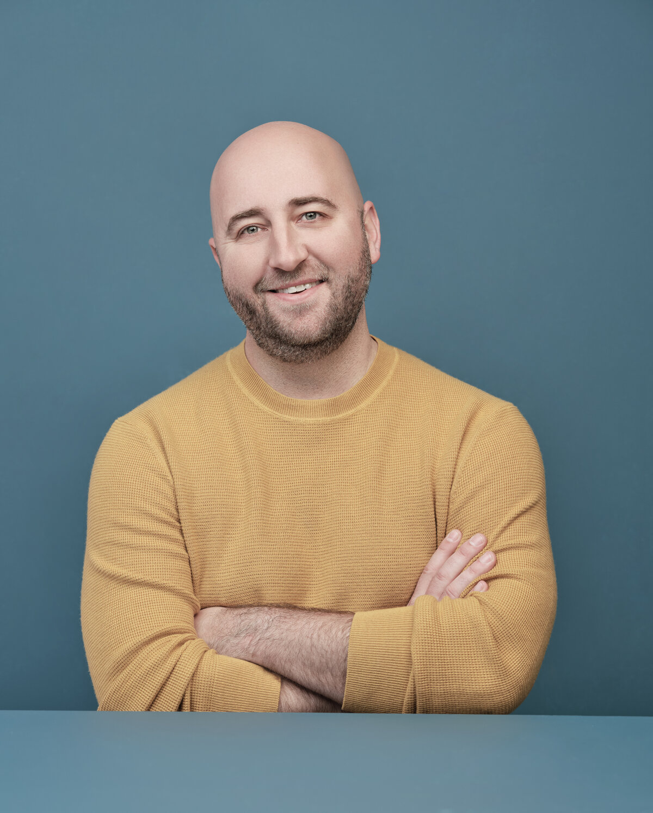

Luke is an award-winning educator, entrepreneur, and Founder of The Cluny Institute.
His 2021 book Wanting: The Power of Mimetic Desire in Everyday Life (St. Martin’s) has been translated into more than 20 languages and called a “spellbinding read” by Adam Grant, “fascinating and playful” by Jonathan Haidt, and “revolutionary” by renowned neuroscientist Dr. Andrew Meltzoff. Peter Thiel has called it “the clearest, most accessible introduction to René Girard available.”
His book The One and the Ninety-Nine (St. Martin’s, 2026) has been called by National Review “the best book on the problem of self and community written so far in the 21st century.”
He splits time between Washington, DC and West Michigan with his wife and children.
